PORTFÓLIO
Projetos
Aqui você encontrará alguns de meus projetos.
Ao longo desses 2 anos que estudo programação desenvolvi várias aplicações, entre elas, projetos pessoais, acadêmicos, jogos e para terceiros, adquirindo conhecimento em cada um deles, fazendo com que ao decorrer do tempo eu conseguisse entender melhor como funcionava cada tecnologia!
Você pode conferir meus projetos clicando nos itens laterais;
Cada um possue o link para acessá-lo e também o link para o repositório GitHub do mesmo.
TERCEIROS
Portfólio
Portfólio pessoal de Emanuela da Rosa;
Stacks usadas: Html, Css, Bootstrap, Javascript;
Clique no gif ao lado para ver

Site
Site para funilaria Ribeiro
Stacks usadas: Html, Css, Bootstrap, Javascript;
Clique no gif ao lado para ver

Portfólio
Novo modelo de portfólio
Stacks usadas: Html, Css, Javascript;
Clique no gif ao lado para ver

JOGOS
Pula Míssil GAME
Jogo criado para desenvolver habilidades em JS;
Jogo com efeitos sonoros;
Stacks usadas: Html, Css, Javascript;
Clique no gif ao lado para ver
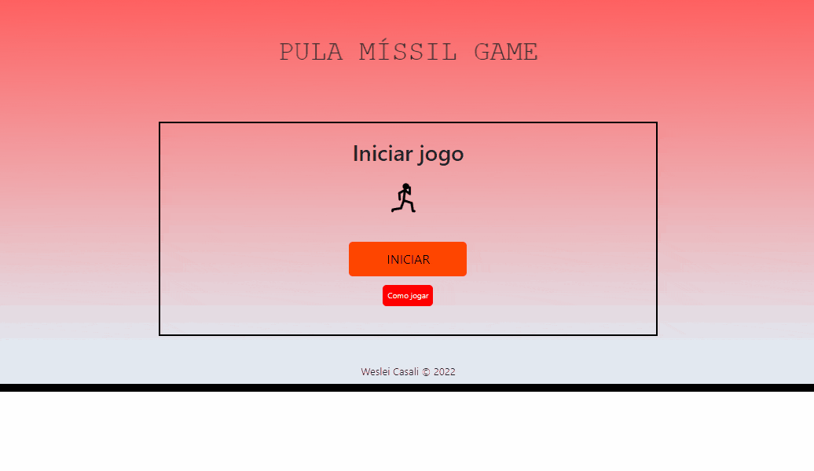Mate me GAME
Jogo clone, com algumas adaptações da minha parte
Jogo com efeitos sonoros;
Stacks usadas: Html, Css, Javascript;
Clique no gif ao lado para ver
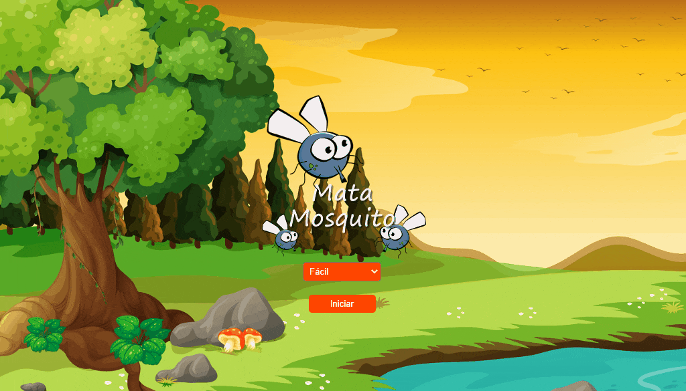Mata Político GAME
Jogo criado como uma nova versão do jogo acima;
Jogo com efeitos sonoros;
Stacks usadas: Html, Css, Javascript;
Clique no gif ao lado para ver
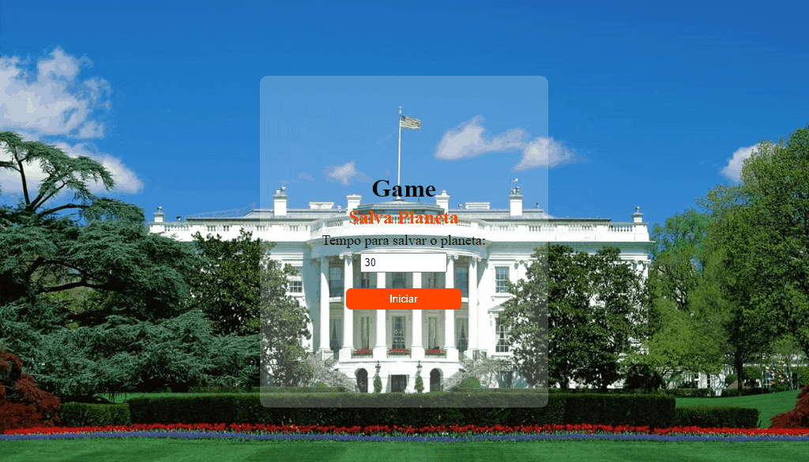Jogo da Velha
Jogue contra a máquina!
Jogo da velha que conta com a função contra a máquina
Stacks usadas: Html, Css, Javascript;
Clique no gif ao lado para ver
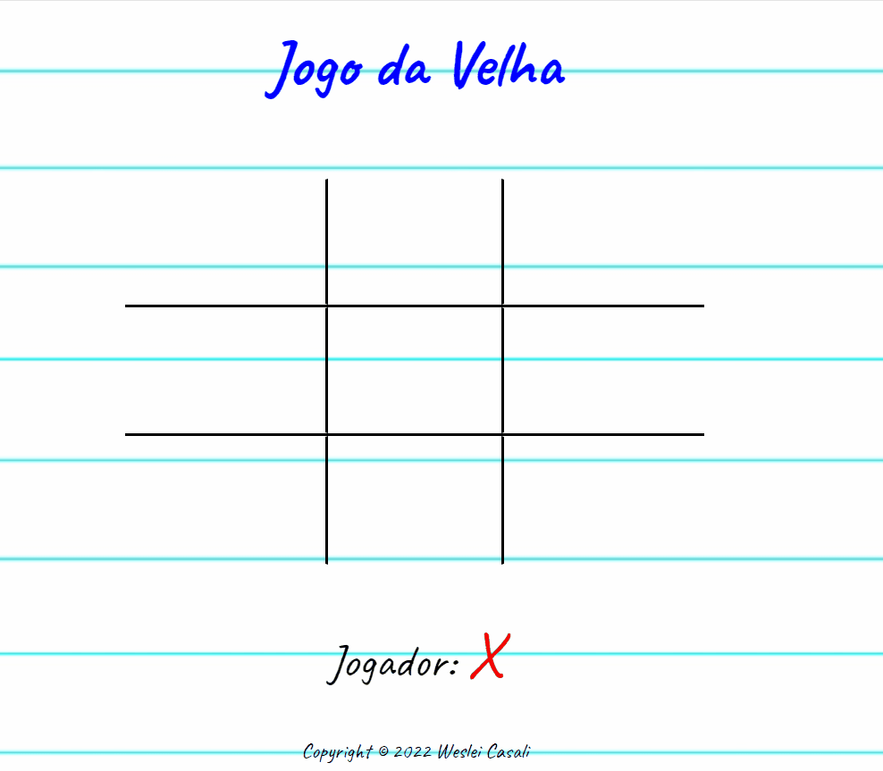Secret Word
Jogo de adivinhar palavras!
Com efeito sonoro
Stacks usadas: React;
Clique no gif ao lado para ver
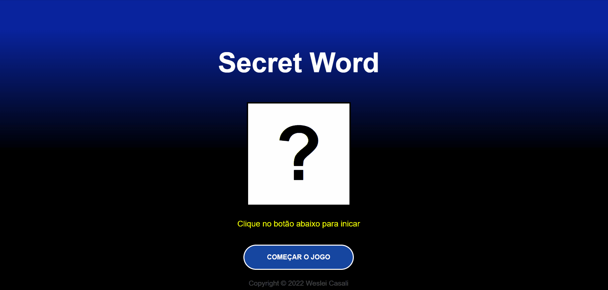Zombie Game
Jogo de zombie
Com efeito sonoro, login e rank de melhores jogadores
Stacks usadas: Html, Css, Javascript;
Clique no gif ao lado para ver

CLONES
Guns N' Roses Site
Clone feito do site da banda Guns N' Roses;
Stacks usadas: Html, Css;
Clique no gif ao lado para ver

Spotify Site
Clone do site do Spotify feito no curso acadêmico;
Stacks usadas: Html, Css, Bootstrap;
Clique no gif ao lado para ver
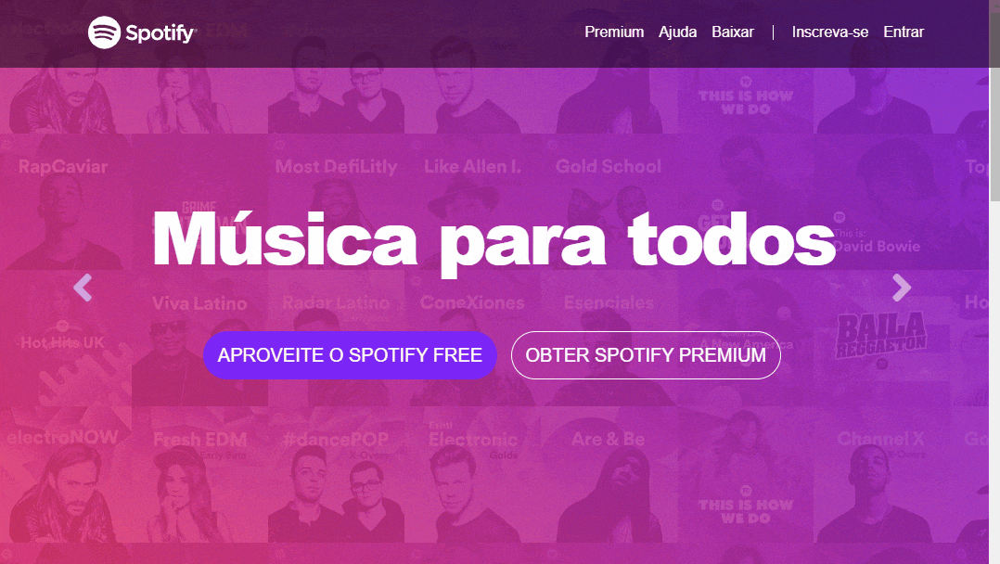CONSUMO DE APIS
Consulta CEP
App com consumo de api para consulta de CEP
Stacks usadas: Html, Css, Javascript;
Clique no gif ao lado para ver
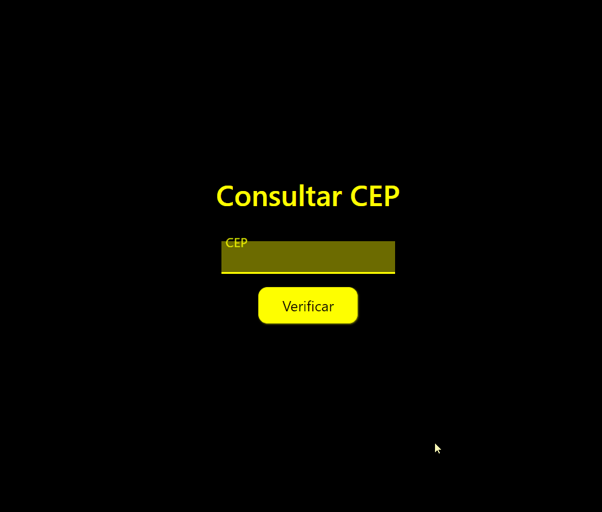STACKS
Doctor Strange
SASS
Landing page feita com SASS para desenvolver entendimentos na tecnologia;
Stacks usadas: Html, SASS;
Clique no gif ao lado para ver
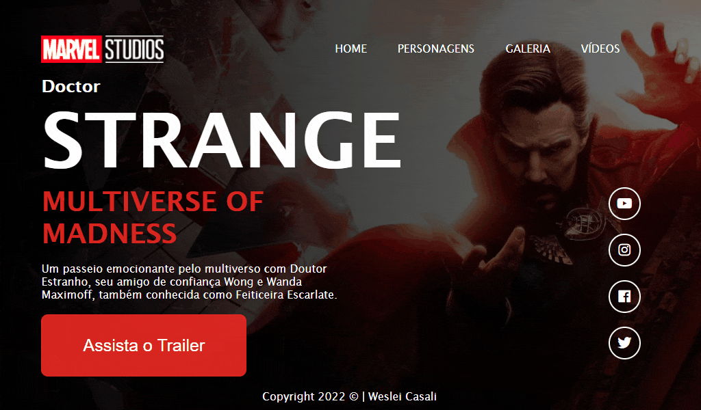Finans App
BOOTSTRAP
Site fictício criado com Bootstrap
Stacks usadas: Html, Bootstrap;
Clique no gif ao lado para ver
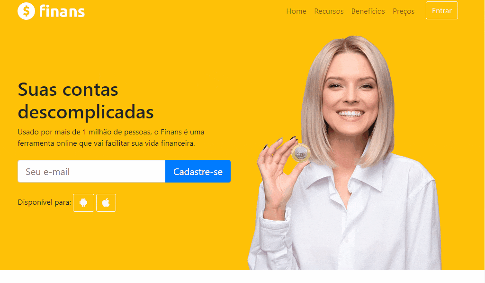App cadastros
JQUERY + BOOTSTRAP
App para cadastros de funcionários
Stacks usadas: jQuery, Bootstrap;
Clique no gif ao lado para ver
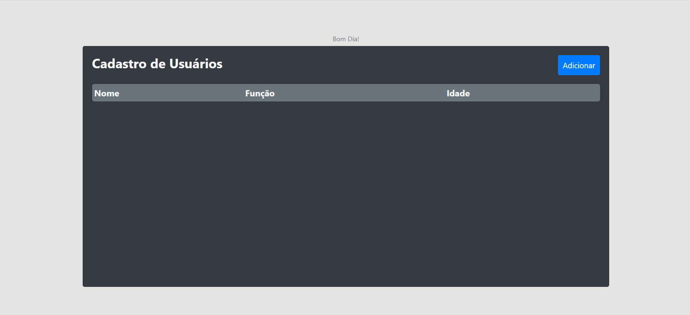PESSOAIS
Calculadora
App básico para práticar os conhecimentos em JS;
Stacks usadas: Html, Css, Javascript;
Clique no gif ao lado para ver
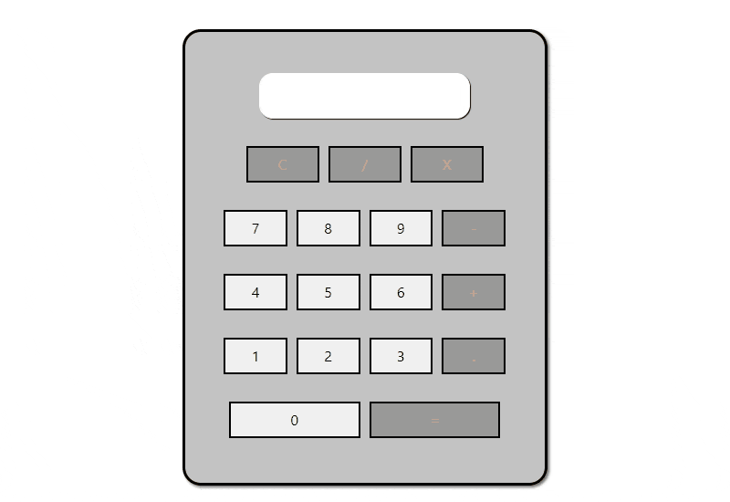Calculador de IMC
Minha primeira aplicação feita com JS;
Stacks usadas: Html, Css, Javascript;
Clique no gif ao lado para ver
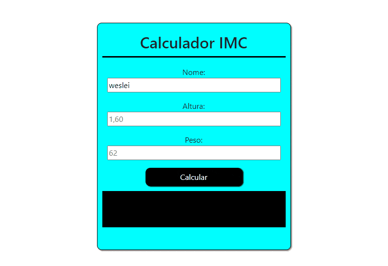Anotações TO-DO
App para anotações de tarefas com banco de dados
Stacks usadas: Html, Css, Javascript, Firebase;
Clique no gif ao lado para ver
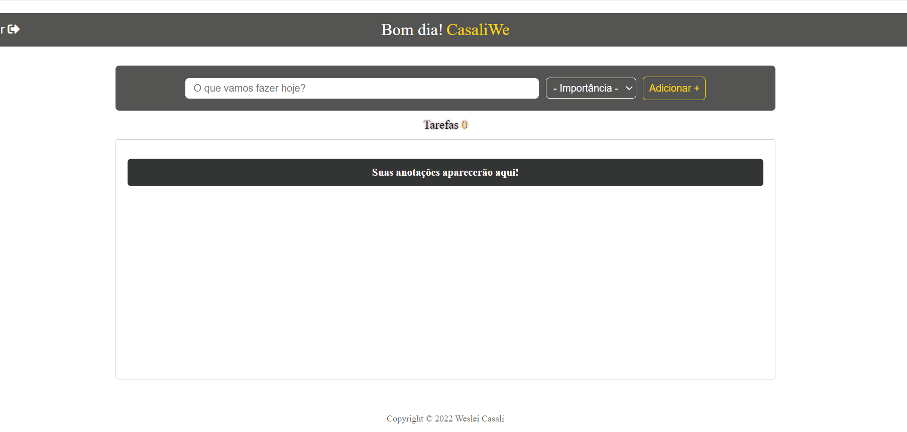Alien Core
App para banda de rock
Stacks usadas: Html, Css, Javascript;
Clique no gif ao lado para ver